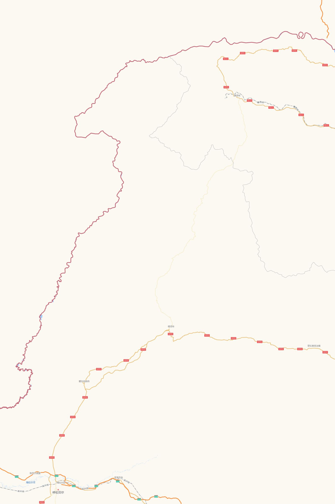

路线地图
海拉尔进、漠河出，一路向北不走回头路。路线按实际道路绘制，点地图上的日期圆点可跳到当天。

逐日行程
我们实际走的就是这条线。每天末尾附当天的天气和日落时间（气象模型回溯值，供参考）。
给想去的你
走完一趟，觉得最值得提前知道的事。
🚗 风景在路上，不必挤景点
这是我们这趟最大的体会。白桦林、额尔古纳湿地、九曲十八弯观景台这些景区我们都没进：公路两边就是成片的白桦、落叶松和草原，看到好看的就路边停一停，有时钻进没人的小路，能看到别人看不到的风景，还不用排队。路边的野摊也别错过——快到室韦时路边服务区的羊肉串，是我们此行吃到的最好吃的东西。
🍁 什么时候去
大兴安岭的秋天很短，9 月初开始变黄，9 月中下旬最浓，国庆后叶子就大量掉落。我们 9 月 15–22 日去，正好赶上。草原的金色在 9 月中旬也最好看。
🧭 怎么走
飞海拉尔进、从漠河飞走，一路向北不走回头路。需要租能异地还车的车（我们海拉尔机场取、漠河机场还），异地还车费用不低，提前比价。两头的机票多半要中转，不同航司行李不直挂，要取出再托运。
🛣 路况
全程基本都是铺装路，SUV 很从容。X904 边防公路路窄弯多、区间测速多，留足时间。出发前我们查到 S204 在修危桥、要走便道，实际很好走，没走便道——官方施工公告可能滞后，问当地人或打 12328 比只看公告准。
⛽ 加油和补给
黑山头出发前一定加满，X904 上 150 km 以上没有加油站。根河、满归、漠河之间加油站也少，逢站加满。漠河是进北红村前最后一个像样的补给点。
🌇 天黑得早
9 月中下旬漠河 17:50 左右日落，林区 17:00 后就明显变暗。尽量早出发、天黑前到，别跑夜路，林区常有狍子、野猪横穿。
🌡 穿什么
白天 10–20℃，早晚接近甚至低于 0℃，越往北越冷。速干打底 + 抓绒 + 轻羽绒三层叠穿，带手套、帽子；鞋要防水防滑（龙江第一湾登顶有 998 级台阶，钻小路也常遇到湿滑的草地）。
🌲 森林防火期
9 月 15 日到 11 月 15 日是秋季防火期，林区禁止吸烟、野炊、明火，进山要接受防火检查。发现火情拨 12119。
🛂 证件
这条线不需要办边防证，但身份证原件一定随身，边境检查站、景区、住宿都要用。
🚁 无人机
边境一线（黑山头、X904、室韦、北红村、北极村一带）都是禁飞区，风景最好的地方恰恰不能飞。不建议带。
📵 信号和导航
林区和边境有大段没有信号，出发前下载离线地图。边境公路上手机会漫游到俄罗斯网络，记得关掉数据漫游。
🚗 只有一辆车的话
没有同行车互相照应，搭电线、拖车绳、打气泵、补胎工具要带齐，出发前确认备胎完好。至少两个人能开车，长途日轮换。
🐎 草原上
只在硬化路边停车，别把车开进草场（牧民会索赔）。边境地区听从执勤人员指引，不要越界。
我们住过的地方
都是通过携程预订。满归、北红村在携程上会显示成所属的「根河市」「漠河市」，别被搞糊涂。
花费与门票
含南京往返机票，3 人 1 辆 SUV、每晚 2 间房分摊，八天七晚。按行前预算估算，实际会随季节和订房时间浮动。
门票为 2026 年 9 月参考价，以景区公告为准。